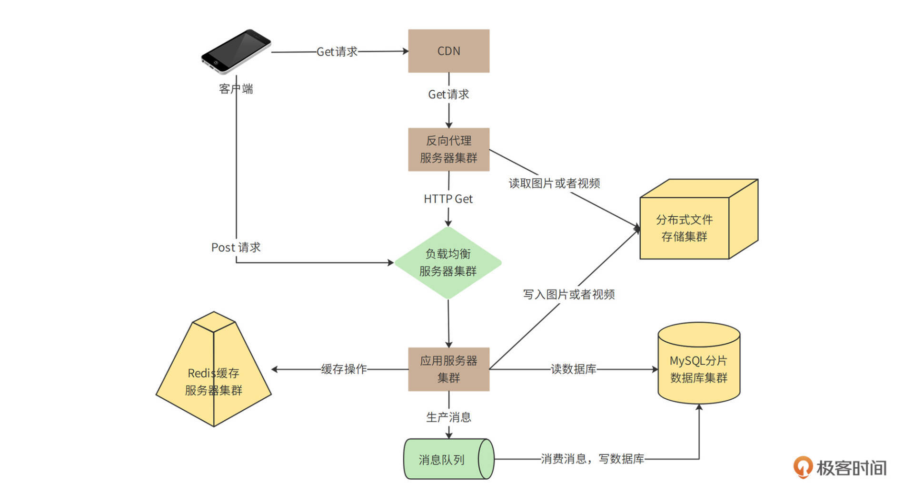
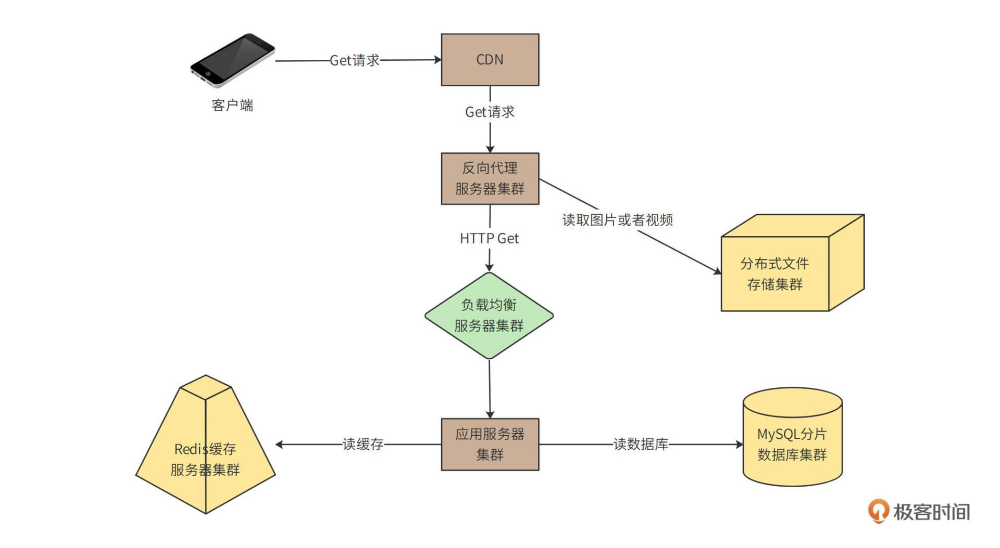
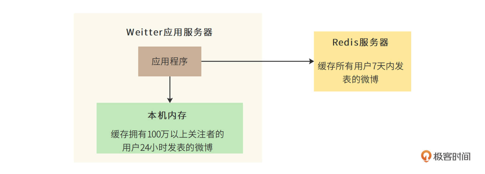

- 00 开篇词 “附身”大厂架构师，身临其境设计高并发系统.md.html
- 01 软件建模与文档：架构师怎样绘制系统架构蓝图？.md.html
- 02 高并发架构设计方法：面对高并发，怎么对症下药？.md.html
- 03 短 URL 生成器设计：百亿短 URL 怎样做到无冲突？.md.html
- 04 网页爬虫设计：如何下载千亿级网页？.md.html
- 05 网盘系统设计：万亿 GB 网盘如何实现秒传与限速？.md.html
- 06 短视频系统设计：如何支持三千万用户同时在线看视频？.md.html
- 07 海量数据处理技术回顾：为什么分布式会遇到 CAP 难题？.md.html
- 08 秒杀系统设计：你的系统可以应对万人抢购盛况吗？.md.html
- 09 交友系统设计：哪种地理空间邻近算法更快？.md.html
- 10 搜索引擎设计：信息搜索怎么避免大海捞针？.md.html
- 11 反应式编程框架设计：如何使方法调用无阻塞等待？.md.html
- 12 高性能架构的三板斧：分析系统性能问题从哪里入手？.md.html
- 13 微博系统设计：怎么应对热点事件的突发访问压力？.md.html
- 14 百科应用系统设计：机房被火烧了系统还能访问吗？.md.html
- 15 限流器设计：如何避免超预期的高并发压力压垮系统？.md.html
- 16 高可用架构的十种武器：怎么度量系统的可用性？.md.html
- 17 Web 应用防火墙：怎样拦截恶意用户的非法请求？.md.html
- 18 加解密服务平台：如何让敏感数据存储与传输更安全？.md.html
- 19 许可型区块链重构：无中心的区块链怎么做到可信任？.md.html
- 20 网约车系统设计：怎样设计一个日赚 5 亿的网约车系统？.md.html
- 21 网约车系统重构：如何用 DDD 重构网约车系统设计？.md.html
- 22 大数据平台设计：如何用数据为用户创造价值？.md.html
- 结束语 一个架构师的一天.md.html
- 捐赠
13 微博系统设计：怎么应对热点事件的突发访问压力？
你好，我是李智慧。
微博（microblog）是一种允许用户即时更新简短文本（比如140个字符），并可以公开发布的微型博客形式。今天我们就来开发一个面向全球用户、可以支持10亿级用户体量的微博系统，系统名称为“Weitter”。
我们知道，微博有一个重要特点就是部分明星大V拥有大量的粉丝。如果明星们发布一条比较有话题性的个人花边新闻，比如宣布结婚或者离婚，就会引起粉丝们大量的转发和评论，进而引起更大规模的用户阅读和传播。
这种突发的单一热点事件导致的高并发访问会给系统带来极大的负载压力，处理不当甚至会导致系统崩溃。而这种崩溃又会成为事件热点的一部分，进而引来更多的围观和传播。
因此，Weitter的技术挑战，一方面是微博这样类似的信息流系统架构是如何设计的，另一方面就是如何解决大V们的热点消息产生的突发高并发访问压力，保障系统的可用性。今天我们就来看看这样的系统架构该怎么设计。
需求分析
Weitter的核心功能只有三个：发微博，关注好友，刷微博。

- 发微博：用户可以发表微博，内容包含不超过140个字的文本，可以包含图片和视频。
- 关注好友：用户可以关注其他用户。
- 刷微博：用户打开自己的微博主页，主页显示用户关注的好友最近发表的微博；用户向下滑动页面（或者点刷新按钮），主页将更新关注好友的最新微博，且最新的微博显示在最上方；主页一次显示20条微博，当用户滑动到主页底部后，继续向上滑动，会按照时间顺序，显示当前页面后续的20条微博。
- 此外，用户还可以收藏、转发、评论微博。
性能指标估算
系统按10亿用户设计，按20%日活估计，大约有2亿日活用户（DAU），其中每个日活用户每天发表一条微博，并且平均有500个关注者。
而对于发微博所需的存储空间，我们做如下估算。
- 文本内容存储空间
遵循惯例，每条微博140个字，如果以UTF8编码存储汉字计算，则每条微博需要\(\\small 140\\times3=420\)个字节的存储空间。除了汉字内容以外，每条微博还需要存储微博ID、用户ID、时间戳、经纬度等数据，按80个字节计算。那么每天新发表微博文本内容需要的存储空间为100GB。
\(\\small 2亿 \\times (420B +80B) = 100GB/天\)
- 多媒体文件存储空间
除了140字文本内容，微博还可以包含图片和视频，按每5条微博包含一张图片，每10条微博包含一个视频估算，每张图片500KB，每个视频2MB，每天还需要60TB的多媒体文件存储空间。
\(\\small 2亿\\div5\\times500KB+2亿\\div10\\times2MB=60TB/天\)
对于刷微博的访问并发量，我们做如下估算。
- QPS
假设两亿日活用户每天浏览两次微博，每次向上滑动或者进入某个人的主页10次，每次显示20条微博，每天刷新微博次数40亿次，即40亿次微博查询接口调用，平均QPS大约5万。
\(\\small 40亿\\div（24\\times60\\times60）=46296/秒\)
高峰期QPS按平均值2倍计算，所以系统需要满足10万QPS。
- 网络带宽
10万QPS刷新请求，每次返回微博20条，那么每秒需访问200万条微博。按此前估计，每5条微博包含一张图片，每10条微博包含一个视频，需要的网络总带宽为4.8Tb/s。
\(\\small （200万\\div5\\times500KB+200万\\div10\\times2MB）\\times8bit=4.8Tb/s\)
概要设计
在需求分析中我们可以看到，Weitter的业务逻辑比较简单，但是并发量和数据量都比较大，所以，系统架构的核心就是解决高并发的问题，系统整体部署模型如下。

这里包含了“Get请求”和“Post请求”两条链路，Get请求主要处理刷微博的操作，Post请求主要处理发微博的请求，这两种请求处理也有重合的部分，我们拆分着来看。
我们先来看看Get请求的部分。

用户通过CDN访问Weitter的数据中心、图片以及视频等极耗带宽的请求，绝大部分可以被CDN缓存命中，也就是说，4.8Tb/s的带宽压力，90%以上可以通过CDN消化掉。
没有被CDN命中的请求，一部分是图片和视频请求，其余主要是用户刷新微博请求、查看用户信息请求等，这些请求到达数据中心的反向代理服务器。反向代理服务器检查本地缓存是否有请求需要的内容。如果有，就直接返回；如果没有，对于图片和视频文件，会通过分布式文件存储集群获取相关内容并返回。分布式文件存储集群中的图片和视频是用户发表微博的时候，上传上来的。
对于用户微博内容等请求，如果反向代理服务器没有缓存，就会通过负载均衡服务器到达应用服务器处理。应用服务器首先会从Redis缓存服务器中，检索当前用户关注的好友发表的最新微博，并构建一个结果页面返回。如果Redis中缓存的微博数据量不足，构造不出一个结果页面需要的20条微博，应用服务器会继续从MySQL分片数据库中查找数据。
以上处理流程主要是针对读（http get）请求，那如果是发表微博这样的写（http post）请求呢？我们再来看一下写请求部分的图。

你会看到，客户端不需要通过CDN和反向代理，而是直接通过负载均衡服务器到达应用服务器。应用服务器一方面会将发表的微博写入Redis缓存集群，一方面写入分片数据库中。
在写入数据库的时候，如果直接写数据库，当有高并发的写请求突然到来，可能会导致数据库过载，进而引发系统崩溃。所以，数据库写操作，包括发表微博、关注好友、评论微博等，都写入到消息队列服务器，由消息队列的消费者程序从消息队列中按照一定的速度消费消息，并写入数据库中，保证数据库的负载压力不会突然增加。
详细设计
用户刷新微博的时候，如何能快速得到自己关注的好友的最新微博列表？10万QPS的并发量如何应对？如何避免数据库负载压力太大以及如何快速响应用户请求？详细设计将基于功能需求和概要设计，主要讨论这些问题。
微博的发表/订阅问题
Weitter用户关注好友后，如何快速得到所有好友的最新发表的微博内容，即发表/订阅问题，是微博的核心业务问题。
一种简单的办法就是“推模式”，即建一张用户订阅表，用户关注的好友发表微博后，立即在用户订阅中为该用户插入一条记录，记录用户id和好友发表的微博id。这样当用户刷新微博的时候，只需要从用户订阅表中按用户id查询所有订阅的微博，然后按时间顺序构建一个列表即可。也就是说，推模式是在用户发微博的时候推送给所有的关注者，如下图，用户发表了微博0，他的所有关注者的订阅表都插入微博0。

推模式实现起来比较简单，但是推模式意味着，如果一个用户有大量的关注者，那么该用户每发表一条微博，就需要在订阅表中为每个关注者插入一条记录。而对于明星用户而言，可能会有几千万的关注者，明星用户发表一条微博，就会导致上千万次的数据库插入操作，直接导致系统崩溃。
所以，对于10亿级用户的微博系统而言，我们需要使用“拉模式”解决发表/订阅问题。也就是说，用户刷新微博的时候，根据其关注的好友列表，查询每个好友近期发表的微博，然后将所有微博按照时间顺序排序后构建一个列表。也就是说，拉模式是在用户刷微博的时候拉取他关注的所有好友的最新微博，如下图：

拉模式极大降低了发表微博时写入数据的负载压力，但是却又急剧增加了刷微博时候读数据库的压力。因为对于用户关注的每个好友，都需要进行一次数据库查询。如果一个用户关注了大量好友，查询压力也是非常巨大的。
所以，首先需要限制用户关注的好友数，在Weitter中，普通用户关注上限是2000人，VIP用户关注上限是5000人。其次，需要尽量减少刷新时查询数据库的次数，也就是说，微博要尽量通过缓存读取。
但即使如此，你会发现每次刷新的查询压力还是太大，所以Weitter最终采用“推拉结合”的模式。也就是说，如果用户当前在线，那么就会使用推模式，系统会在缓存中为其创建一个好友最新发表微博列表，关注的好友如果有新发表微博，就立即将该微博插入列表的头部，当该用户刷新微博的时候，只需要将这个列表返回即可。
如果用户当前不在线，那么系统就会将该列表删除。当用户登录刷新的时候，用拉模式为其重新构建列表。
那么如何确定一个用户是否在线？一方面可以通过用户操作时间间隔来判断，另一方面也可以通过机器学习，预测用户的上线时间，利用系统空闲时间，提前为其构建最新微博列表。
缓存使用策略
通过前面的分析我们已经看到，Weitter是一个典型的高并发读操作的场景。10万QPS刷新请求，每个请求需要返回20条微博，如果全部到数据库中查询的话，数据库的QPS将达到200万，即使是使用分片的分布式数据库，这种压力也依然是无法承受的。所以，我们需要大量使用缓存以改善性能，提高吞吐能力。
但是缓存的空间是有限的，我们必定不能将所有数据都缓存起来。一般缓存使用的是LRU淘汰算法，即当缓存空间不足时，将最近最少使用的缓存数据删除，空出缓存空间存储新数据。
但是LRU算法并不适合微博的场景，因为在拉模式的情况下，当用户刷新微博的时候，我们需要确保其关注的好友最新发表的微博都能展示出来，如果其关注的某个好友较少有其他关注者，那么这个好友发表的微博就很可能会被LRU算法淘汰删除出缓存。对于这种情况，系统就不得不去数据库中进行查询。
而最关键的是，系统并不能知道哪些好友的数据通过读缓存就可以得到全部最新的微博，而哪些好友需要到数据库中查找。因此不得不全部到数据库中查找，这就失去了使用缓存的意义。
基于此，我们在Weitter中使用时间淘汰算法，**也就是将最近一定天数内发布的微博全部缓存起来，用户刷新微博的时候，只需要在缓存中进行查找。如果查找到的微博数满足一次返回的条数（20条），就直接返回给用户；如果缓存中的微博数不足，就再到数据库中查找。
最终，Weitter决定缓存7天内发表的全部微博，需要的缓存空间约700G。缓存的key为用户ID，value为用户最近7天发表的微博ID列表。而微博ID和微博内容分别作为key和value也缓存起来。
此外，对于特别热门的微博内容，比如某个明星的离婚微博，这种针对单个微博内容的高并发访问，由于访问压力都集中一个缓存key上，会给单台Redis服务器造成极大的负载压力。因此，微博还会启用本地缓存模式，即应用服务器在内存中缓存特别热门的微博内容，应用构建微博刷新页的时候，会优先检查微博ID对应的微博内容是否在本地缓存中。
Weitter最后确定的本地缓存策略是：针对拥有100万以上关注者的大V用户，缓存其48小时内发表的全部微博。
现在，我们来看一下Weitter整体的缓存架构。

数据库分片策略
前面我们分析过，Weitter每天新增2亿条微博。也就是说，平均每秒钟需要写入2400条微博，高峰期每秒写入4600条微博。这样的写入压力，对于单机数据库而言是无法承受的。而且，每年新增700亿条微博记录，这也超出了单机数据库的存储能力。因此，Weitter的数据库需要采用分片部署的分布式数据库。分片的规则可以采用用户ID分片或者微博 ID分片。
如果按用户ID（的hash值）分片，那么一个用户发表的全部微博都会保存到一台数据库服务器上。这样做的好处是，当系统需要按用户查找其发表的微博的时候，只需要访问一台服务器就可以完成。
但是这样做也有缺点，对于一个明星大V用户，其数据访问会成热点，进而导致这台服务器负载压力太大。同样地，如果某个用户频繁发表微博，也会导致这台服务器数据增长过快。
要是按微博 ID（的hash值）分片，虽然可以避免上述按用户ID分片的热点聚集问题，但是当查找一个用户的所有微博时，需要访问所有的分片数据库服务器才能得到所需的数据，对数据库服务器集群的整体压力太大。
综合考虑，用户ID分片带来的热点问题，可以通过优化缓存来改善；而某个用户频繁发表微博的问题，可以通过设置每天发表微博数上限（每个用户每天最多发表50条微博）来解决。最终，Weitter采用按用户ID分片的策略。
小结
微博事实上是信息流应用产品中的一种，这类应用都以滚动的方式呈现内容，而内容则被放置在一个挨一个、外观相似的版块中。微信朋友圈、抖音、知乎、今日头条等，都是这类应用。因此这些应用也都需要面对微博这样的发表/订阅问题：如何为海量高并发用户快速构建页面内容？
在实践中，信息流应用也大多采用文中提到的推拉结合模式，区别只是朋友圈像微博一样推拉好友发表的内容，而今日头条则推拉推荐算法计算出来的结果。同样地，这类应用为了加速响应时间，也大量使用CDN、反向代理、分布式缓存等缓存方案。所以，熟悉了Weitter的架构，就相当于掌握了信息流产品的架构。
思考题
面对微博的高并发访问压力，你还能想到哪些方案可以优化系统？
欢迎在评论区分享你的思考，我们共同进步。
© 2019 - 2023 Liangliang Lee. Powered by gin and hexo-theme-book.